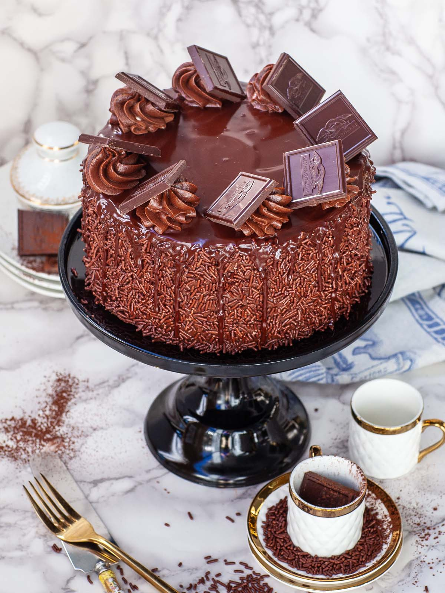

Home
Chocolate Cake

Description
This rich and moist chocolate cake is perfect for any celebration. Made with cocoa powder and layered with chocolate frosting, it’s a dream for chocolate lovers.
Ingredients
- 1 3/4 cups all-purpose flour
- 2 cups sugar
- 3/4 cup cocoa powder
- 2 tsp baking soda
- 1 tsp baking powder
- 1 tsp salt
- 2 eggs
- 1 cup buttermilk
- 1/2 cup vegetable oil
- 2 tsp vanilla extract
- 1 cup hot water
Steps
- Preheat oven to 350°F (175°C). Grease and flour two 9-inch round baking pans.
- In a large bowl, mix dry ingredients.
- Add eggs, buttermilk, oil, and vanilla. Mix until smooth.
- Stir in hot water (batter will be thin).
- Pour batter into pans and bake 30–35 minutes.
- Cool, then frost with your favorite chocolate frosting.